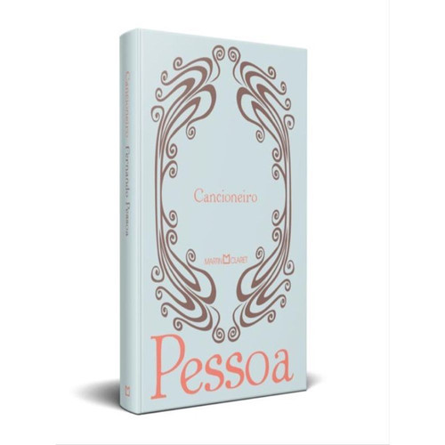

1.
O Livro do Desassossego: Escrito pelo semi-heterônimo Bernardo Soares, esta obra é uma coleção de reflexões e fragmentos que
exploram a existência e a identidade.
2.
Mensagem : - Esta é a única obra que Fernando Pessoa publicou em vida.
3. O Banqueiro Anarquista:- Um conto que explora a contradição entre a riqueza e a filosofia anarquista.

4. Cancioneiro: - Uma antologia de poemas que apresenta a poesia simbolista de Pessoa.
5. Poemas dos Heterônimos .
Romendações para Leitura:
Escolha conforme gênero: poesia, prosa poética ou contos, dependendo do interesse do leitor.
Considere edições revisadas ou com notas:aumentam a compreensão da obra.
Obras por heterônimo:podem oferecer experiências literárias diferentes, explorando estilos distintos
e temas variados.
Leitura digital ou física:ebooks são práticos e acessíveis, enquanto edições em capa dura oferecem
durabilidade